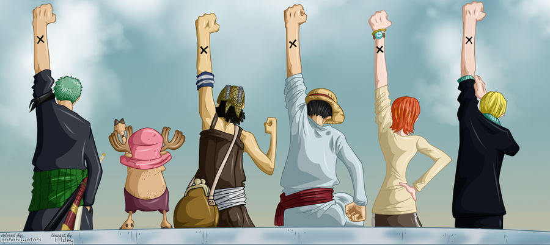

One Piece
ONE PIECE adalah sebuah Manga dan Anime yang menceritakan tentang petualangan sekelompok bajak laut
dalam mencari harta karun legendaris, One Piece. One Piece dibuat oleh Eiichiro Oda pada Agustus
1997 di Shonen Jump terbitan Shueisha dan hingga kini masih terus berlanjut. Versi anime nya mulai
dibuat pada Oktober 1999 dan kini telah mencapai lebih dari 1000 episode.
Hingga saat ini One Piece adalah manga paling laris sepanjang sejarah Jepang dengan penjualan lebih
dari 260 juta eksemplar. Selain itu One Piece juga memecahkan rekor sebagai manga dengan cetakan
terbanyak. One Piece banyak mendapat pujian di antara para pembaca, terutama dalam hal gambar,
karakter, humor, dan cerita.
Alur Cerita

One Piece menceritakan tentang petualangan seorang anak bernama Monkey D. Luffy yang bercita-cita
menjadi raja bajak laut dan menemukan "One Piece" setelah terinspirasi oleh Shanks. Sekitar 22 tahun
sebelum cerita dimulai, seorang bajak laut bernama Gol D. Roger, atau lebih dikenal sebagai raja
bajak laut dieksekusi mati di depan publik. Tepat sebelum kematiannya, ia mengumumkan kepada orang
banyak tentang harta miliknya, One Piece, yang diklaim sebagai harta terbesar yang pernah ada.
Kematian Roger memicu dimulainya era "Zaman Keemasan Bajak Laut", ditandai turunnya banyak bajak laut
hingga tak terhitung jumlahnya mencari harta karun. Luffy termasuk salah satu yang berniat menemukan
One Piece dan menjadi raja bajak laut berikutnya, turun ke laut untuk memulai petualangannya serta
mulai mengumpulkan beberapa kru sebagai teman seperjalanan.